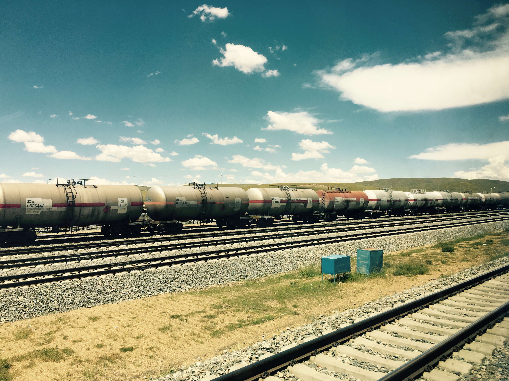
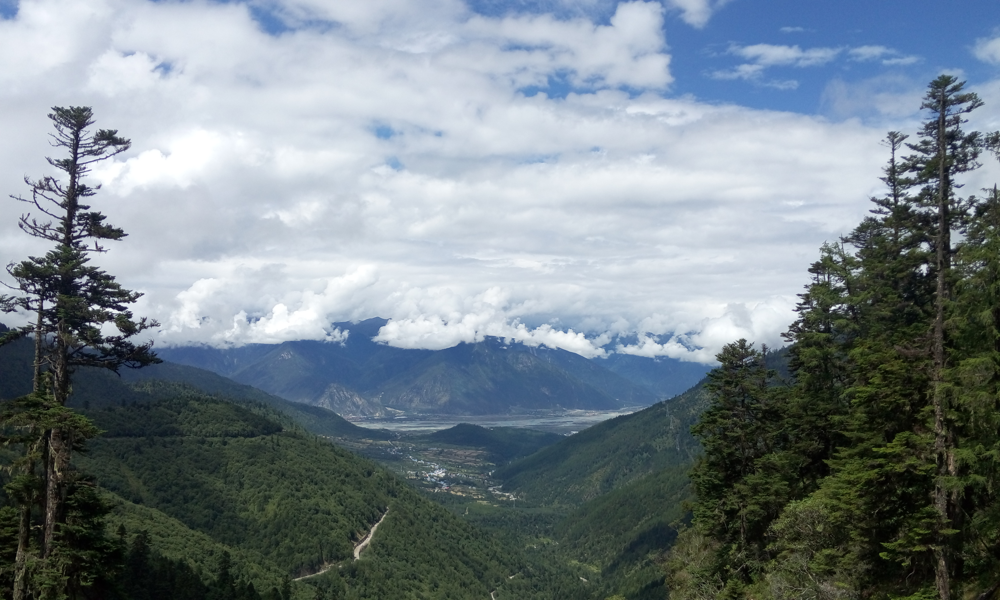
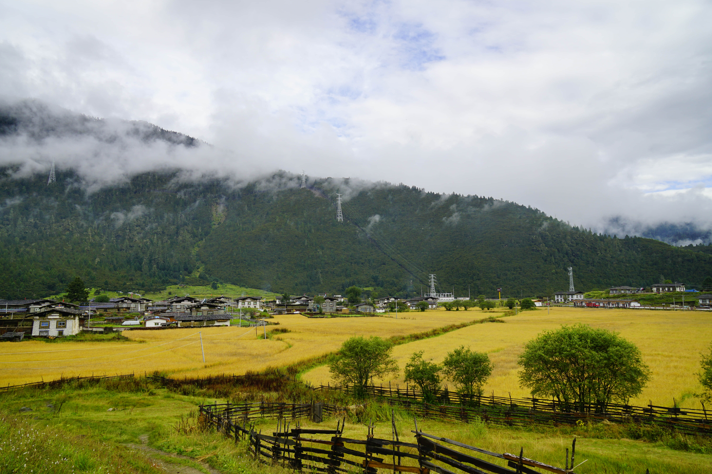
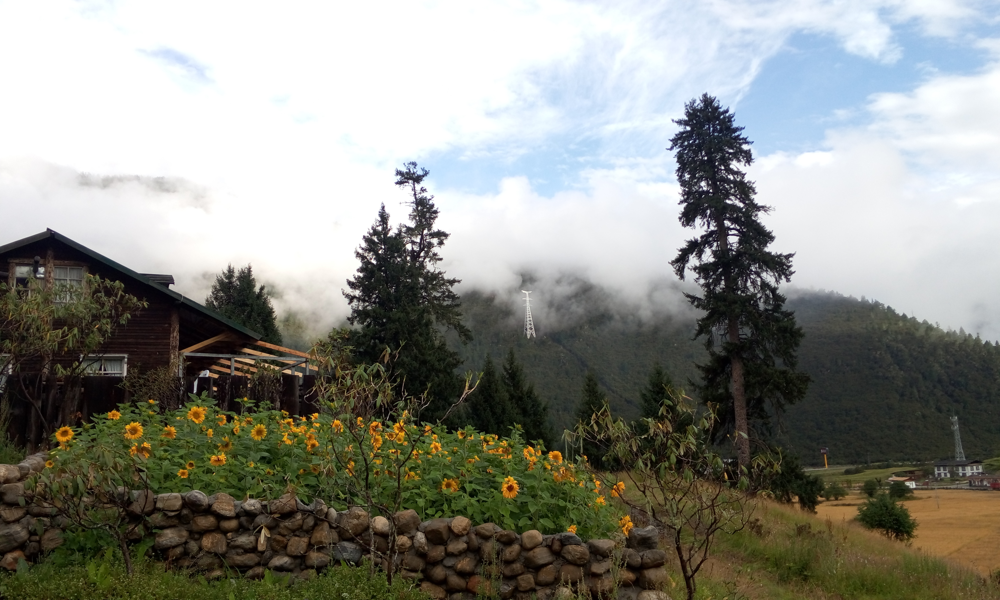
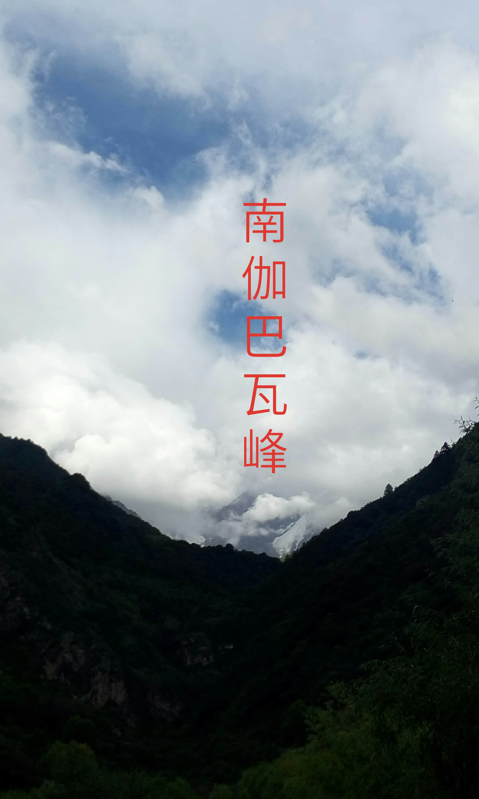
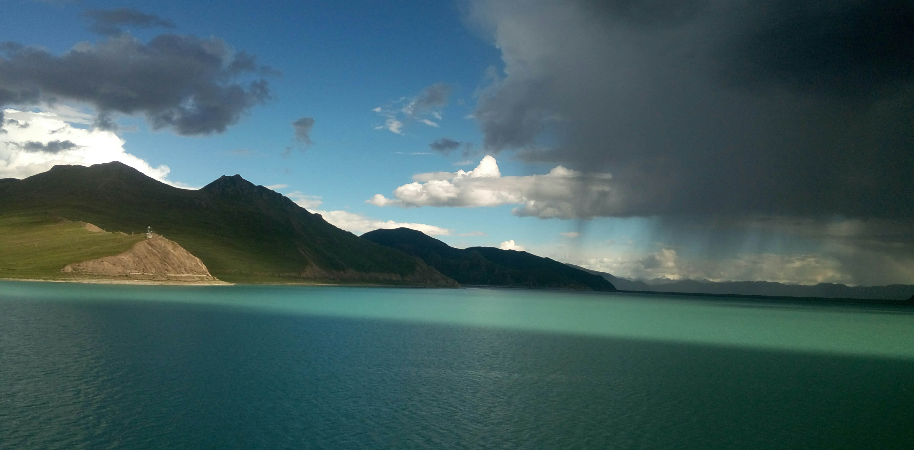
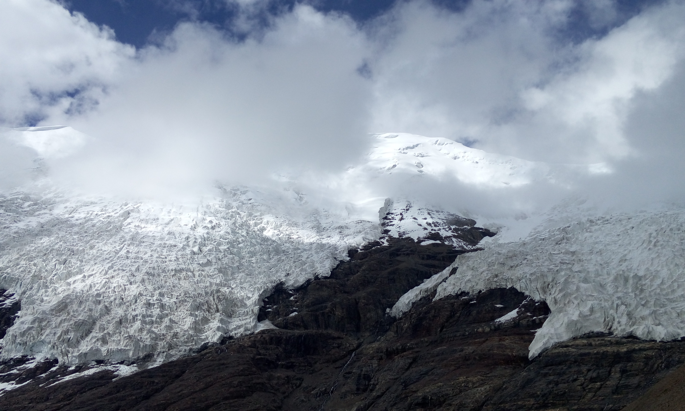
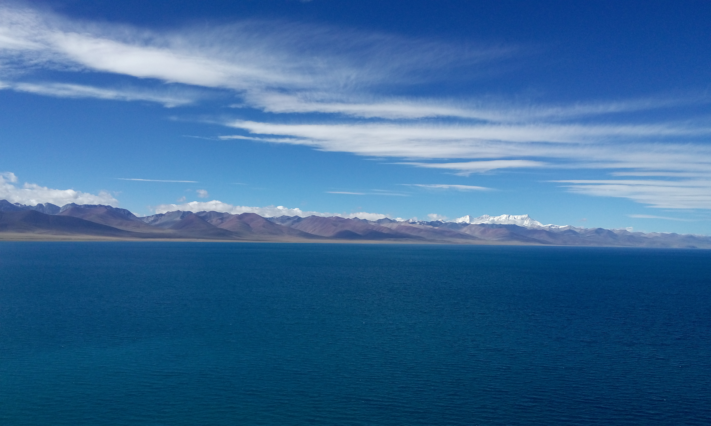
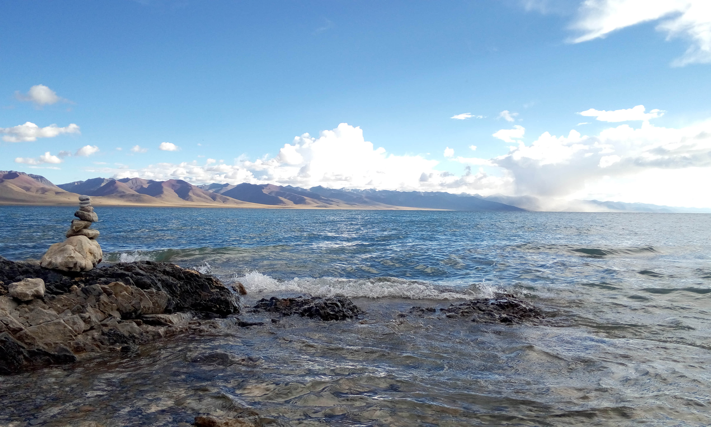
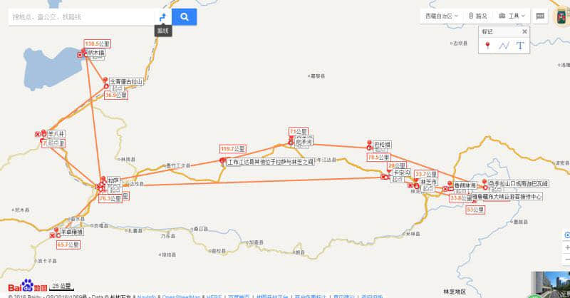

西藏游记（六人七天）
西藏，一个神秘而遥远的地方。一直以来，我就想去这个离太阳最近的地方看看。这个暑假，在小伙伴的相互“逼迫”下，我们终于来到了这个让人痴醉的地方。
在西藏，我们一共呆了7天。7天里，我第一次经历长时间的“汽车旅行”，第一次看到如此湛蓝的天空、湖水，第一次尝试手脚并用攀爬小山——只为离那冰川更近一点，第一次觉得世界上竟然能有这样一个地方如此让人难以忘怀，期待着与她的再次相遇。
美图优先
先放一波大图，后边是详细旅行攻略 |
注：以下图片大部分来源于同行小伙伴 襄阳少陵 转载请说明
Day 0
北京出发，西宁转站，终点拉萨。火车上，一觉醒来，四周都是旷野，远离了城市，没有了喧嚣，有的只是那偶尔出没的藏羚羊、藏野驴，遍地的牦牛，远方的雪山以及山下的小村庄，。

Day 1
拉萨休整一晚后，我们现在市区逛了一天：布达拉宫-大昭寺-八廓街。

Day 2 - 4
接下来是三天的林芝“征程”，称之为征程，并不为过——途中正在修路，所以，我们9点离开拉萨，晚上10点多才到达住宿的地方，返程稍好一点；加之运气不好，在雅鲁藏布江大峡谷也没看到南迦巴瓦峰，只看到厚厚的云层和突来的大雨。当然，这段旅程总归还是有惊喜的——扎西岗村。当晚我们就住在了这个小村子（入藏后睡得最好的一天），第二天醒来，听到窗外淅淅沥沥下起了小雨，不禁担心起了即将开始的行程。好在起床后雨就停了，然后出门在村周围逛了逛，没看到传说中的花海（已经谢了），但代之以别样的美丽。
米拉山口
鲁朗，晚上大家吃了一顿石锅鸡，顿时能量回复

扎西岗村


这只有意思的小牛，摄影师在哪，它就会转向哪里，拍照时，感觉就和假的一样，一动也不动。小插曲：穿了红色外套的我差点被顶到，哈哈！
大峡谷-雅鲁藏布江

期待中的南迦巴瓦峰——中国最美山峰—（来源网络图片）
实际看到的南迦巴瓦峰，无奈天公不作美

Day 5
结束“辛苦”的三天林芝之行，下一站：羊湖-卡若拉冰川。美丽的羊湖，美到无意附加！
如梦如幻

卡若拉冰川，手脚并用爬到了离它最近的地方

Day 6 - 7
西藏之行，最后一站——纳木错，美不美，有图为证


小伙伴拍的银河，远离城市，重新看到小时候看到过的星空。（还看到好几颗流星，默默许下愿望，哈哈！）
据说到了纳木错，一定要看日出日落，日落的确很美，但日出很普通，可能是前几日审美疲劳了吧
去纳木错，捎带一个姐姐一起去的，姐姐平摊的车费被我们拿来在最后一天吃了顿自助火锅餐，算是缓解了下吃了7天川菜的怨念。
攻略总结
西藏的旅行以拉萨为中心，7/8月份为旺季。我们首先确定的是在入藏和离藏时间。由于火车车票不好购买等原因，最终确定总时长11天，往返路上4天，在西藏游玩7天。接下来开始制定具体的行程。
最初设想

主要参看小伙伴找到的攻略介绍
但由于后来包车，以及路况原因，行程进行了调整。
实际方案

具体安排如下：D1: 拉萨一日游
D2: 拉萨--米拉山口--尼洋河--鲁朗林海--扎西岗村（宿）
D3: 扎西岗村--色季拉山口观南迦巴瓦峰--江河交汇处--雅鲁藏布江大峡谷--林芝（宿）
D4: 林芝-卡定沟-拉萨（宿）
D5: 拉萨-羊湖-拉萨（宿）
D6: 拉萨-那根拉山口-纳木错日落（宿）
D7: 纳木错-念青唐古拉山-羊八井-拉萨（宿）
注：
- 去林芝会一路沿着318国道（大部分挨着尼洋河）行进
- 江河交汇处——尼洋河和雅鲁藏布江交汇的地方，水一半绿（尼洋河）、一半黄（雅江）
行
去西藏旅行最大的问题就是交通。所以，先说一下交通问题。
拉萨市区交通便利，打车、公交均可。市区以外的地方，就需要考虑：自驾、包车、客运大巴、火车（拉萨到日喀则，其他地方基本没有）。我们一共六个人，所以包了一个7座车。在西藏见到较多的，除了像我们一样直接包车的同学，还有一些就是跟旅行团或驴友拼车。由于景点之间之间都比较远，而且很多“景点”都是像米拉山口、鲁朗林海这些都是路过看一看就走的地方，所以，入藏，先想好交通问题如何解决。
由于缺少包车信息，我们是在阿里旅行上找了中介，联系到的包车师傅（价格6天7000元）。由于车辆问题，我们中间更换了一个包车师傅，但两位藏族师傅人都很好，后边我会附上他们的联系方式。以后去西藏的朋友可以联系，价格肯定比我们这个便宜，毕竟少了中介嘛。
需要单独说一下的是，林拉公路（林芝到拉萨）估计还要修好长一段时间，所以想去林芝的朋友可以事先打听一下，公路维修状况。如果像我们一样单程需要十几个小时，我建议还是放弃林芝，去亚东（住宿地方的老板推荐）吧，那边风景也不错，何苦忍受两天颠簸呢。当然飞机出行的除外（林芝有机场）。
包车师傅1：扎西（139 8998 8015），人好，车技好
包车师傅2：平措（180 0891 1060），开车相较前一个师傅较慢，但人很好，一路时不时唱一唱藏族歌曲
住
青旅为主，人均价位50-60/晚
- 拉萨：我们在拉萨一共住了五天，一直都在“拉萨藏悦生活青年客栈”，老板微微姐人很好，客栈里还有一只“呆呆”狗，环境也还不错，附近有个大超市，比较方便。
- 林芝：住的“林芝县贰加贰花园主题客栈”，环境不错，老板人也不错。小伙伴最后都把人家房门钥匙带回来了，哈哈！
- 扎西岗村：扎西师傅找的地方，村里都是小客栈，小院非常好看，就是照片里萌牛那个地方。
- 纳木错：纳木错那边基本都是活动板房，所以我们也就无所谓了，扎西师傅找的地方，凑合了一宿。
食
- 早餐：拉萨遍地都是甜茶馆，我们的早餐基本都在住宿附加的甜茶馆：酥油茶（不太习惯）、甜茶（喝了7天）、藏面（肉好吃）、肉饼、牛奶。
- 午餐：川菜，午餐一般都是在行车途中解决，在西藏，途中能吃饭的地方基本都是川菜馆。所以，我们也只能去了。米饭一般不熟，凑合吃（第一次怀念起了学校食堂的米饭），菜价基本看凉拌黄瓜就可以知道，不太一致（人均30-50）。
- 晚餐：面食为主，当然也可以川菜。
衣
- 纳木错以外的地方：一件带绒薄外套 + 短袖
- 纳木错：羽绒服，太阳下山后真的很冷
其他注意事项
- 高反：我们一行人，除了在火车经过那曲那边高海拔（4000-5000）地方时，有轻微的头痛、恶心外，在其他地方都没事，包括纳木错。刚到拉萨，可能上个楼梯都大喘，但休息一晚后面就好很多。我们没有吃药、吸氧，毕竟我们没有去珠峰之类的海拔较高的地方。火车上倒是有见吸氧的乘客，但很少。总之，放平心态最重要，多喝水，走路慢一点，不用太担心。
- 防晒保湿：重要，我们带了帽子、防晒霜（虽然是男生，但也用了）、墨镜、唇膏（有些干）。。。
结语
总的来看，去西藏还是比较“麻烦”的，所以开始时我也萌生退意，但感谢同行小伙伴的“逼迫”，西藏很美，不虚此行，也算是圆了一个梦。以后有机会我还是想去西藏走一走，去看看珠峰、亚东、阿里，看看西藏的其他地方。正所谓“走走停停，放空自己，体味真正的纯净”。